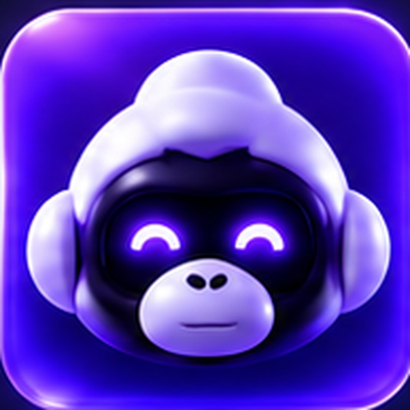
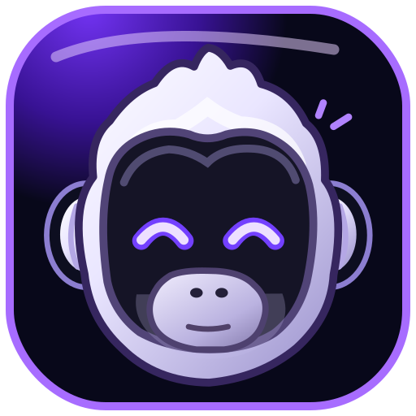
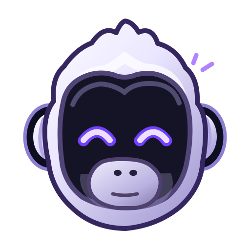
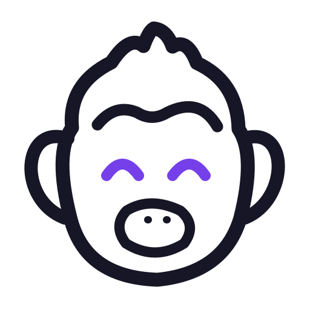
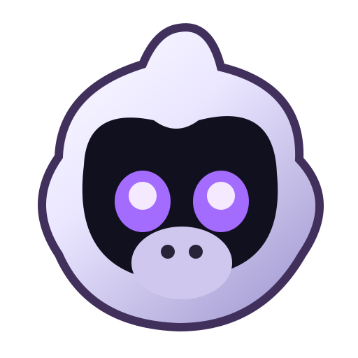
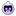
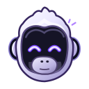
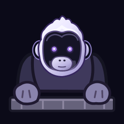

InnerAnimalMedia · Character identity
Gorilla AgentSam.
The character, the favicon, and the desktop companion—one consistent face.
Icon directions






Actual favicon sizes

16px
24px
32px
48px
64px

128px
Mini composer and desktop pet
